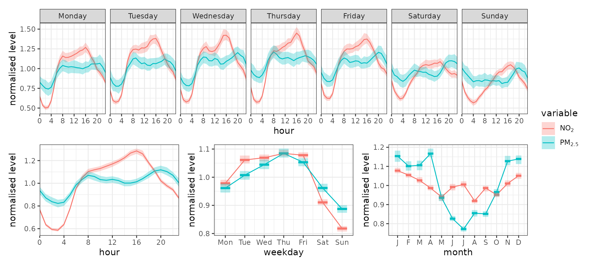
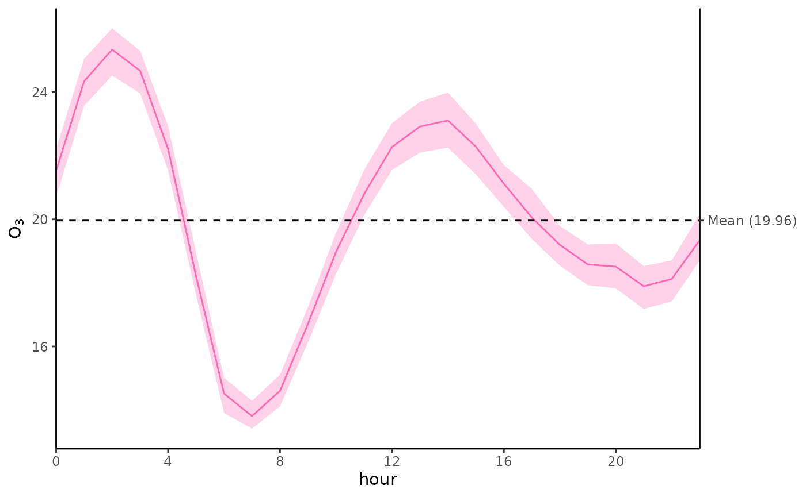

Time Series and Trends
ggopenair-trends.Rmd
library(ggopenair)
library(ggplot2)
library(dplyr)
#>
#> Attaching package: 'dplyr'
#> The following objects are masked from 'package:stats':
#>
#> filter, lag
#> The following objects are masked from 'package:base':
#>
#> intersect, setdiff, setequal, union
# not needed - for comparisons
library(openair)Time Plots
Unlike in openair, ggopenair
does not have a dedicated time_plot()
function. This is because creating time series in ggplot2
is already so simple. The “legacy” timePlot() looks like
this:
timePlot(marylebone, pollutant = "nox", avg.time = "month")The legacy openair time plot
The equivalent in ggplot2 is shown below.
plt <-
marylebone %>%
time_average(avg_time = "month") %>%
ggplot(aes(x = date, y = nox)) +
geom_line() +
theme_bw() +
labs(x = NULL, y = quickText("nox"))While there are more lines of code to achieve the same thing, a
ggplot2 plot is much more customisable.
ggopenair even contains tools to help with common issues.
For example, we can add limit values using the
scale_y_limitval() function.
plt +
scale_y_limitval(c(150, 350), "red", c("Getting\nHigher", "Too high!"), c(2,1))There is also no equivalent for smoothPlot() as that is
already well served by geom_smooth().
plt + geom_smooth()
#> `geom_smooth()` using method = 'loess' and formula = 'y ~ x'
Temporal Variations
gg_timevariation works much the same way as
timeVariation(), but returns a patchwork assemblage. These
can be treated similarly to a ggplot2 object, but the
ampersand (&) symbol is used to style all plots
together.
gg_timevariation(marylebone, c("no2", "pm2.5"), normalise = TRUE) &
theme_bw() &
scale_fill_discrete(
aesthetics = c("colour", "fill"),
labels = scales::label_parse()(c("NO[2]", "PM[2.5]"))
)
The return argument can be used to obtain specific
panels. This could be useful if not all panels are meaninful for your
data, or you want to customise individual panels.
hour_panel <- gg_timevariation(marylebone, "o3", return = "hour")
avg = mean(hour_panel$data$Mean)
hour_panel +
theme_classic() +
scale_color_manual(values = "hotpink", aesthetics = c("colour", "fill")) +
scale_y_limitval(marker_values = avg, marker_labels = paste0("Mean (", round(avg, 2), ")")) +
theme(legend.position = "none")
Time Proportion Plots
gg_timeprop() behaves almost identically to
timeProp(), albeit with fewer arguments as more can be
controlled using labs(), scales_*_*(), and so
on.
marylebone %>%
filter(format(date, "%Y") == 2019) %>%
gg_timeprop(pollutant = "pm10",
avg_time = "3 day",
proportion = "wd") +
theme_bw() +
scale_fill_brewer(palette = "Dark2")
#> Warning: 432 missing wind direction line(s) removedproportion behaves similarly to facet
(type in the original openair). If a column
isn’t present in the data set (or it is numeric), it will use
openair::cutdata() to parse it and work out how it can be
used to cut the data. The recommendation, however, is to get your
categories in order before you use proportion —
then you have full control over and understanding of the output. For
example, in the below plot, we use cut_wd() to pre-cut the
wind directions into bins — in this case, fewer bins by setting
resolution to “low”.
marylebone %>%
mutate(wd = cut_wd(wd, "low")) %>%
filter(format(date, "%Y") == 2019,
!is.na(wd)) %>%
gg_timeprop(pollutant = "pm10",
avg_time = "3 day",
proportion = "wd") +
theme_bw() +
scale_fill_brewer(palette = "Dark2")
Trend Heat Maps
Much like with the time proportion plots,
gg_trendlevel() is very similar to
trendLevel().
plt <-
gg_trendlevel(marylebone, "nox", "hour", "month", "year") +
scale_opencolours_c() +
theme_minimal() +
labs(fill = quickText("Mean NOx"), y = NULL)
pltA minor exception is that, when possible, axes are automatically parsed as numeric/integer rather than always being factors. This avoids label overlap, and allows users to use continuous scales for further transformations and annotations. For example, here each day is split into four, 6-hour segments.
plt +
scale_x_continuous(breaks = seq(0, 24, 6)) +
geom_vline(xintercept = c(6, 12, 18))Calendar Plots
Calendar plots once again behave similarly, but the annotations are dealt with using bespoke functions. These make it easier to customise or layer the annotations on top of one another.
marylebone |>
openair::selectByDate(year = 2019) |>
gg_calendar("nox") +
annotate_calendar_text("date") +
annotate_calendar_wd(colour = "black") +
scale_opencolours_c()An extra feature of gg_calendar() is that multiple years
can now be easily plotted. Instead of a normal calendar, a year-month
matrix is produced.
library(scales)
marylebone |>
gg_calendar("nox") +
scale_opencolours_c(limits = c(0, 600), oob = squish)TheilSen
There is currently no version of theilSen in
ggopenair. This is open for discussion, but it will
either take the form of an openair-like function (e.g.,
gg_theilsen()) or a more
ggplot2-esque geom_theil(). Until this
functionality has been developed, feel free to use
openair::theilSen(), optionally re-plotting in
ggplot2 if desired.